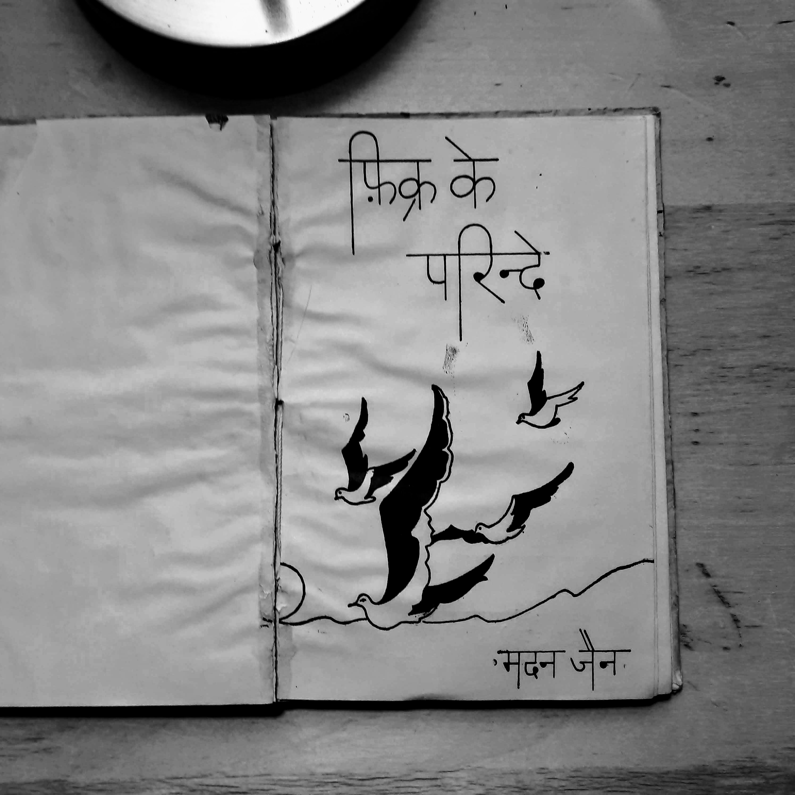
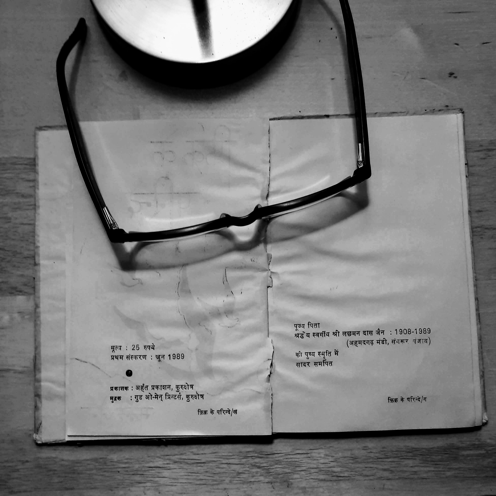

Madan Maholvi
A masters in history and an analyst of religion, he also has huge unpublished work on "Jain Dharma in Haryana"
This online resource is a collection of his unpublished work .. Mostly poems and short stories ..
Rasta Tau Mile
This is a collection of 43 poems written in a specific style of Urdu Poetry called Nazm. A Nazm is a free flowing text that explores one specific feeling or emotion. It can be topical and imbibe certain flow but the writer is free to choose or ignore the rhythm. Nazm represents a freedom from the rule based poetry. The idea is to have the writer as much leeway as she needs to express a thought. That is the reason Nazm was proclaimed to be the voice of progressive Tarakki Yafta poets. It was embraced by likes of Kaifi Azmi in his early days as an expression of the progressive movement.
The book is about self discovery. Poet seeks himself amidst the chaotic eighties of India - a struggle between hope and failures , the growing pains of the society as much as within. Very evident in the title poem ..
In a way the poetical format - Nazm is a very apt choice for the topic at hand "Show me the path" . He is judicious with the words without compromising the freedom of the medium.
Creative commons and open source credits
This work is under creative commons licence. You are free to use , copy , redesign any which you you like as long as you visibly attribute the original as under
Title Rasta Tau Mile by Madan Maholvi (poems.shutri.com)
Licensed under Creative Commons: By Attribution 3.0
http://creativecommons.org/licenses/by/3.0/
- The online presentation of the book is through an "open source" documentation tool "mdbook". You may click on three horizontal bars at the top left corner of the screen to open a side panel to access the poems sorted in a index style.
- The open access project is hosted at Github
Recital
The audio recording and editing is through "open source" applications "Audacity" and "SoX". Audio files are stored at internet archive. The good thing about audio player from archive.org is it allows embedding individual tracks on web pages ; as well as all the sound tracks together kinda like a clickable playlist. Short of a podcast, I guess this is best uninterrupted audio experience ..
I am not a professional sound artist but my attempt is to invoke an eighties style "All India radio Urdu Service" audio experience. A laid back but thoughtful listening experience. I am seeking help from professional sound artists to improve upon these renditions.
Contributions
Please feel free to visit the repository at Github . You may raise issues if you see any technical or literary discrepancies. I am looking for help to translate these poems in other languages - particularly in English. I will provide technical assistance and publishing support . If you have a taste for the poetry and command on other languages , please contact me through email
You may find my rendition lacking in Urdu pronunciation or poetic style of "Nazm" rendiion. If you have a better voice for Urdu (or Hindi), please feel free to record the audio and send me in .mp3 format. I will be happy to add your rendition with due credits.
And most importantly please spread the word for these amazing poems. I truly feel they deserve a wider audience. You can download the audio for a single track or all the files in single shot from internet archive . Downloads are available in zip format or as well as a torrent . If you need files in .wav format , feel free to drop me an email
~Ashutosh~


Jagta Patthar

Rasta


Hum Dono


Us Paar


Khushbu


Lunch Time

Bol Kavi


Lekin

Us Ne


Koi Tau Pata Hoga


Yoon Hi Khada Hoon


Kis Liye


Ek Kabira


 
वातायन
फिक्र के परिन्दे शीर्षक संग्रह मदन की उर्दू कविताओं का प्रथम संग्रह है। हर्ष का विषय है कि कवि इसे नागरी लिपि में प्रकाशित करवा रहा है। हमें आशा है कि इस से उस के पाठकों के क्षेत्र की व्यापकता में आशानुकूल वृद्धि होगी और विशाल हिन्दी-प्रेमी जन समूह इस का रसास्वादन कर सकेगा ।
संग्रह की अधिकांश कविताओं में कवि मदन जैन समसामयिक समस्याओं तथा ज्वलन्त प्रश्नों से जूझता दिखाई देता । पड़ोसी राज्य में घटित होने वाली दुःखद घटनाओं, बदली हुई अन्तर्राष्ट्रीय परिस्थितियों तथा राजनैतिक और सामाजिक परिवेश - सब का जायजा लेता हुआ दृष्टिगत होता है ।
आज का माहौल इतना भयानक हो गया है मनुष्य अपने साये से भी भयभीत है। संग्रह की कि अनेक कविताओं में संशय, भय, संत्रास-जन्य परिस्थि तियों के कई वास्तविक चित्र उभर कर सामने आते हैं। कवि को शब्द-चित्रों द्वारा अपनी बात कहने मे यथेष्ट सफलता मिली है। उस के कई चित्र हृदय-पटल पर अंकित होकर दीर्घकाल के लिए अपनी छाप छोड़ने में सफल हुए हैं।
एक चित्र देखिए :
माहौल किस क़दर भयानक है।
आदमी मरते हैं।
आदमी चुप हैं
यहाँ तक कि इबादतगाहों में
ख़ुदा की पनाहों में
मौत मुस्कराती है कहकहे लगाती है।
आदमी चुप हैं बेजुबां गोलियाँ चीखती हैं
ये हसीं दुनिया जैसे एक मकतल हो
लगता है जैसे कोई आया है
नहीं यह तो मेरा साया (मेरा साया)
"बँटवारा" शीर्षक रचना इस संग्रह की सर्व श्रेष्ठ रचनाओं में से एक है। बँटवारे की आशंका मात्र से कवि का व्यग्र तथा उद्विग्न हो उठता है । यह विशाल देश सारे का सारा अपना है। खेत खलिहान, शीशम के पेड़, मदमस्त नदियां सरसब्ज जंगल, पहाड़ों की चोटियाँ किस किस चीज का बँटवारा होगा। गांव-गाँव, घर-घर शहर शहर कैसे बॅट सकेंगे ? जमीन, चश्में, गीत-गजलें कैसे बॅट सकेंगी-सब ! और जब वह बूढ़ा बाप जो विश्व भर में अमन और शान्ति का पैग़ाम लेकर गया हुआ है लौटकर आएगा तो क्या देखेगा ? यही न कि हम तुम जुदा हो गए हैं। हम बूढ़े बाप का जिस्म, हड्डियाँ, लहू, आँखें सब बाँट लेंगे ।"
"मगर
प्यार और मुहब्बत का फलसफा
अमन और दोस्ती का रिश्ता
किस तरह बँढेगा !" --"बँटवारा"
संग्रह की अधिकांश रचनाएँ विचारोत्तेजक है। मदन जैन को इस भयानक माहौल में भी मनुष्य की महानता पर गर्व है। अफ्रीका के लोगों के साथ साथ वह भी दस मील लम्बी दौड़, दौड़ रहा है ।
देखिए :
"मैं और
मेरे अन्दर जो एक शायर है।
तेरे साथ साथ भाग रहे हैं।
दस मील लम्बी दौड़ ही नहीं
बल्कि बहुत लम्बी दौड़
कुरुक्षेत्र के मैदाने जंग से
तेरे जलते हुए सहराओं तक
लगातार
शाम-ओ सहर"
(कुरुक्षेत्र के मैदान-ए-जंग से)
मास्को से अमन का संदेश देने वाले विश्व के महान नेता मिखाइल गोर्वाचेव के नाम लिखित कविता की निम्न लिखित पंक्तियाँ विशेष रूप से पठनीय हैं जिनमें कवि ने मनुष्य की महानता को स्वीकार किया है :
तुम इक आदमी हो
और हर आदमी के लिए
जिन्दगी के लिए
उम्मीद के हसीं पलों की तरह हो
बेकरां समन्दर, बेबादबां कश्तियाँ,
आंधियाँ
गिरदाब-ए-बला में
तुम साहिलों की तरह हो
(अज़ीमतर)
कवि देश के कोटि-कोटि, दीन हीन, बेसहारा अर्द्धनग्न लोगों को कभी विस्मृत नहीं कर सका । -
देखिए
मेरे गिरद-ओ-नवाह दूर तक
टूटे फूटे झोंपड़ों का लम्बा सिलसिला है।
उरियाँ नीम-उरियाँ बदन वोसीदा हड्डियाँ
हड्डियों के जिस्म
बेनूर चेहरे
बुझी बुझी सी आँखें
मुफलिसों के जमघट हैं
गोया हसरतों के पनघट हैं
हज़ारों फाकाकश मासूम बच्चे
मेरे आसपास रहते हैं
मुझे अपना समझते हैं
(तू आएगी कैसे)
मदन जैन की भाषा में चित्रात्मकता का बाहुल्य है । कहीं कहीं तो वह कुछ वस्तुओं अथवा प्राकृतिक दृश्यों का नामोल्लेख करके ही एक संश्लिष्ट चित्र निर्मित कर देता है। ऐसा ही एक संश्लिष्ट चित्र देखिए :
रास्ते मोड़
शाम-ओ-सहर
मंजिलें और मुसाफिर
बादे सबा फूल कलियाँ शजर
हसीं शहज़ादियाँ जुल्फे शोख रंग आंचल
मुहब्बत की हर दास्तां
आग की दहकती हुई भट्टियाँ
मजदूर और दहकां
एक इक धमाके से
कौस-ए-कजाह के शोख रंग
और ये सब – सब कुछ
बादलों में घुल जाएंगे ।
(अजीमतर)
मदन जैन जिन्दगी से प्यार करता है, उससे डर नहीं भागता । वह प्यार की एक रात को एक सदी के जीवन से अधिक मूल्यवान समझता है। "रत जगों का मौसम" शीर्षक कविता इस संग्रह की एक सशक्त रचना है। इस की निम्न पंक्तियाँ द्रष्टव्य हैं:
रात
इस युग की आखरी हो रात
और शायद
अपनी मुलाकात भी दोस्त !
इस रचना की चित्रात्मकता भी देखने योग्य है।
मन्दिर का हर एक मीनारा
चाँदनी रातें
बेल, बूटे, पहाड़
खुदानुमा पत्थर
जवां दिलकश बहार
सब पुकारें
आने वाले कल से कोई रिश्ता न हो
इस रात का
'ख्वाब' 'शहर' 'बागी था महावीर' और "क्या नाम दू" - इस संग्रह की कुछ अन्य सशक्त रचनाएँ हैं ।
मदन जैन कला-शिक्षक तथा कला प्रेमी है; अतः उस की रचनाओं का कलात्मक होना स्वाभाविक है। वह जानता है कि अपनी बात कहाँ समाप्त करनी है और उसके बाद वह एक शब्द भी जोड़ना उचित नहीं समझता । अतुकान्त कविता पर कवि का पूरा अधिकार है। कविताओं में प्रवाह के साथ साथ एक आन्तरिक लय विद्यमान रहती है। हमें पूर्ण आशा है कि जैन की कला पर दिन प्रतिदिन और निखार आता जाएगा ।
अन्त में हम इस संग्रह के प्रकाशन पर कवि को हार्दिक बधाई देते हैं तथा उसे विश्वास दिलाते हैं कि उर्दू तथा हिन्दी दोनों भाषाओं के पाठक इस का समान रूप से स्वागत करेंगे । मदन जैन हरियाणा की जदीद उर्दू शायरी में जल्द ही अपना स्थान बना सकेगा और उस की रचनाओं को स्थायित्व प्राप्त हो सकेगा - इस के साथ ही हम इस वक्तव्य को समाप्त करते हैं ।
ज्योतिनगर,
कुरुक्षेत्र,
बुद्ध पूर्णिमा ( सम्बत् २०४६ )
खुशीराम वाशिष्ठ (राज्य कवि हरियाणा)